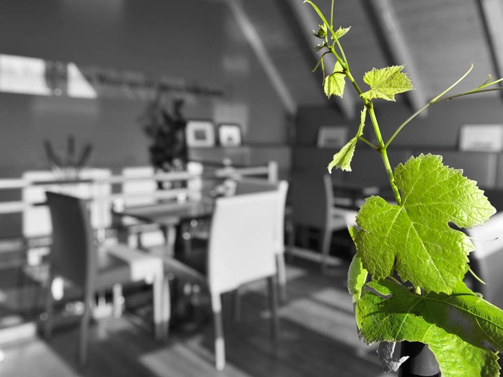
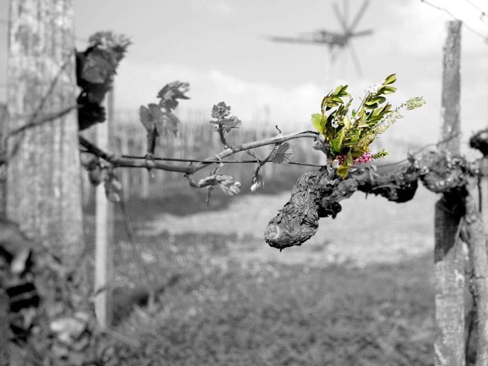
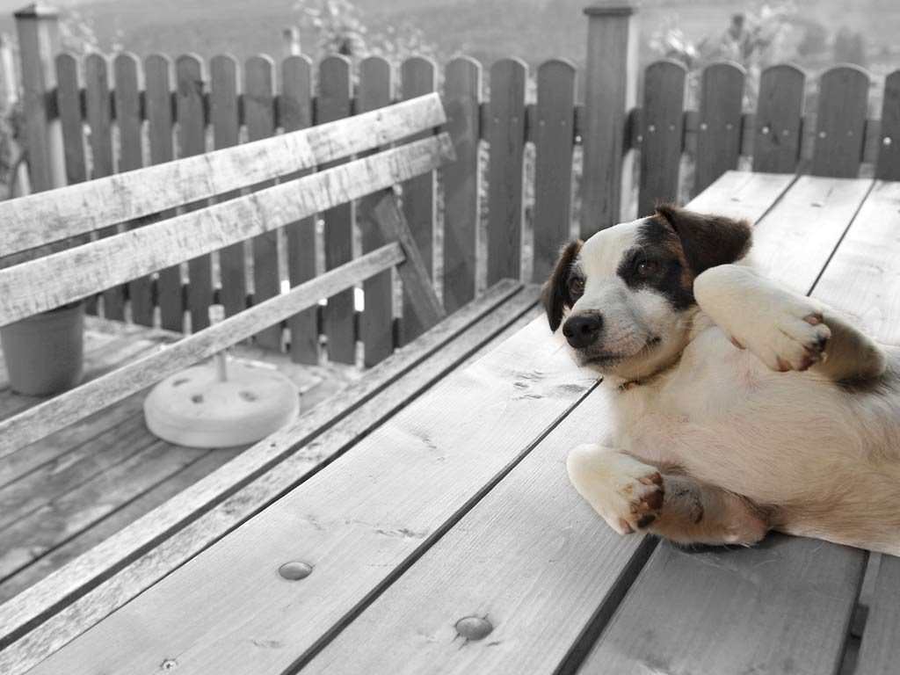
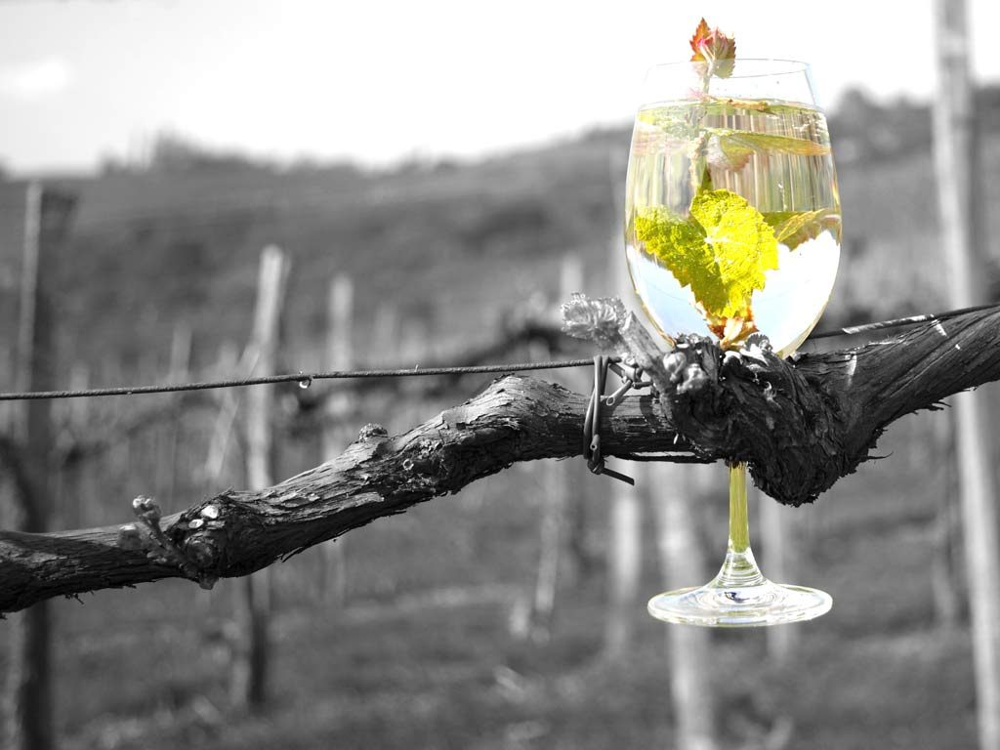
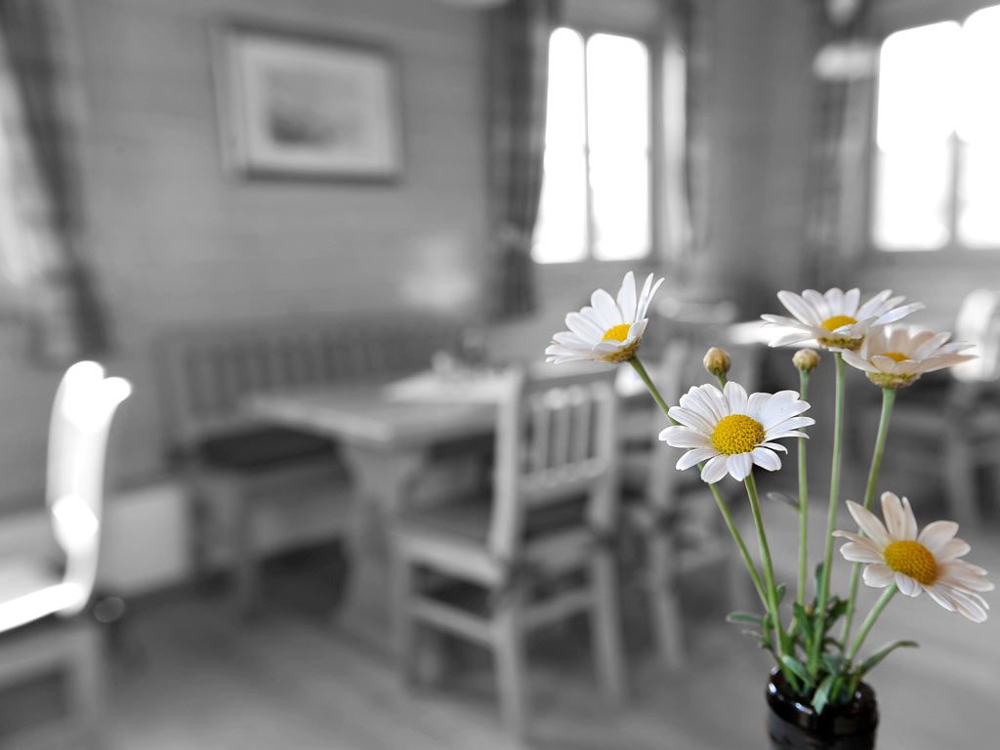
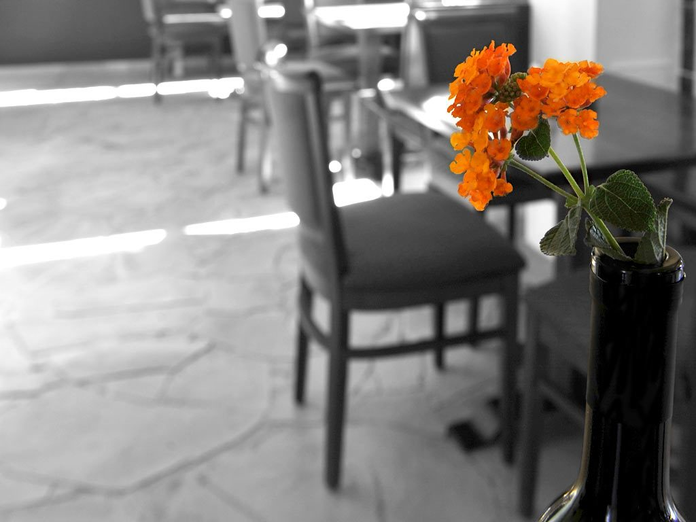
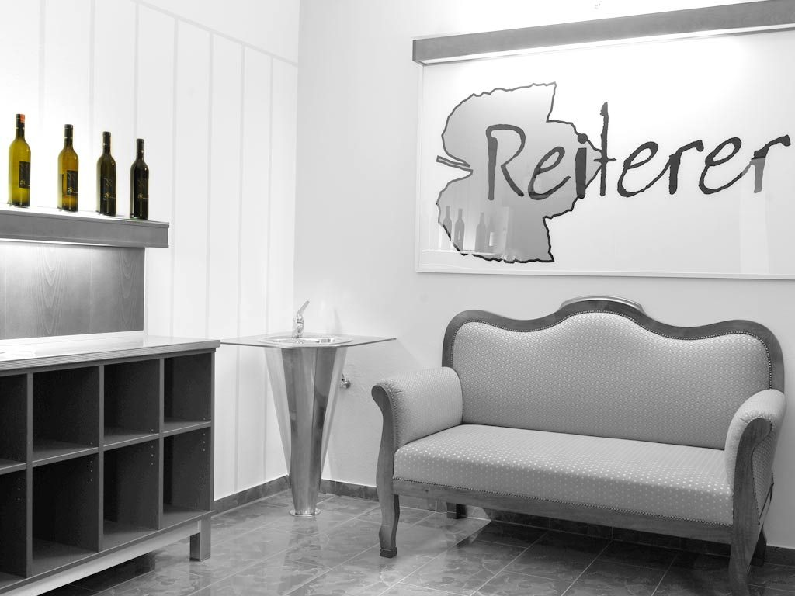

Speis
Genießerei statt Lederhosenschmäh
Brettljause mit luftgetrocknetem Rohschinken, Brüstl, Speck, Hauswürstl und G’selchtem. Dazu Hirschrohschinken, Kernöleierspeis, Käferbohnen – und hauseigene, fangfrisch geräucherte Forelle.

Winzerei · Buschenschank · Destillerie
Weinbauernwirtschaft ohne karierttradierte Einheitsromantik: Urgesteinsweine aus dem Sausal, eine Genießerei rund um Fisch, Hirsch und Kräuter, drei Zimmer zum Bleiben und ein Gin, den 18 Botanicals ihre Seele kosten.
Was andere sagen
Tripadvisor 4,7 von 5 · 77 Bewertungen auf Facebook, 98 % Empfehlung.

Der Wein
Das Klima und ein Höchstmaß an Sonne schaffen in Kitzeck die Basis für ganz besondere Weine. Die Sausaler Urgesteinsböden verleihen ihnen eine eigenständig-mineralische Note.
Was einen Winzer ausmacht? Nun ja, alles. Die „animierte Weinbauerei“ von Reinmund Reiterer lebt in der besonderen Beziehung zu seinen Böden – Jahre des Beobachtens, des Spürens, des Mittendrin-Lebens.
Das Ergebnis sind Kitzecker Reiterer-Weine. Anders sind sie halt.
Drei Gründe zu kommen
Speis
Brettljause mit luftgetrocknetem Rohschinken, Brüstl, Speck, Hauswürstl und G’selchtem. Dazu Hirschrohschinken, Kernöleierspeis, Käferbohnen – und hauseigene, fangfrisch geräucherte Forelle.
Trank
Distilled Dry Gin, Pink Bathtub Gin und Navy Strength Gin – in Handarbeit mazeriert und perkuliert, mehrfach international ausgezeichnet, ab 31,20 Euro je 0,5 Liter.
Schlaf
Welschriesling, Weißer Burgunder und Sauvignon: eigenes Nuss- und Eichenholz, Schiefer, Espressomaschine – und rund um die Uhr Zugang zum Wildererstüberl.
Aus dem Haus
Die phänomenale Aussicht haben viele – Kitzeck ist halt Kitzeck, dafür kann keiner was. Dagegen hat aber auch keiner was: Nachmittage mit grenzenlosem Weitblick, traumhafte Sonnenuntergänge und eine Kulinarik, die unter dem Motto Fisch, Hirsch und Kräuter für Überraschungen sorgt.
„Eine ganz normale Weinstube“ sei man, trotz designtem Ambiente und kreativ ambitionierter Genießerei. Ein vollkommen ungruseliger Platz zum Seele-baumeln-Lassen.

Galerie





Jetzt
Reservierung, Zimmeranfrage und Bestellung laufen hier direkt über das Haus. Für die geräucherte Forelle bitten wir um rechtzeitigen Anruf, damit sie wirklich frisch auf den Teller kommt.
Kurz & wichtig
Täglich ab 13:00 Uhr geöffnet, Mittwoch und Donnerstag Ruhetag. Saison 1. März bis 30. November.
Telefon +43 3456 2537, mobil +43 664 3072711.
Online-Shop des Hauses: www.shop-reiterer.at